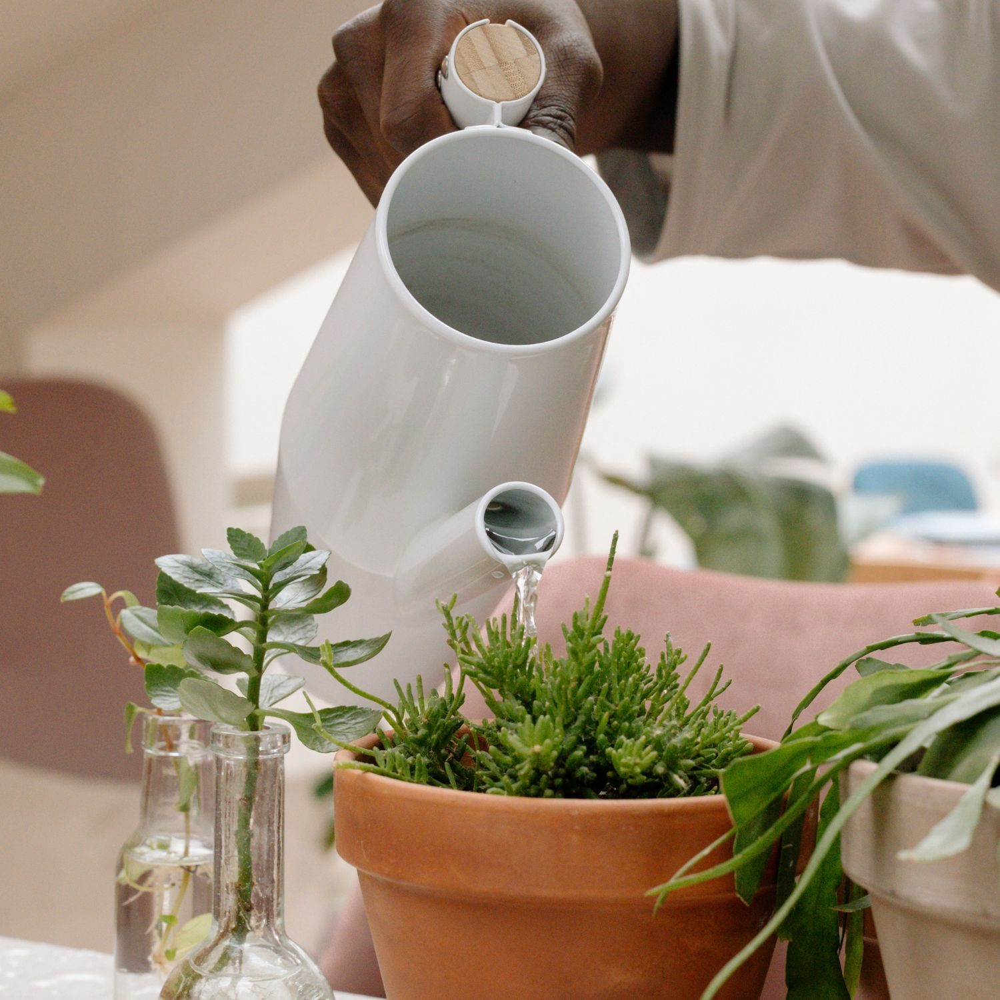
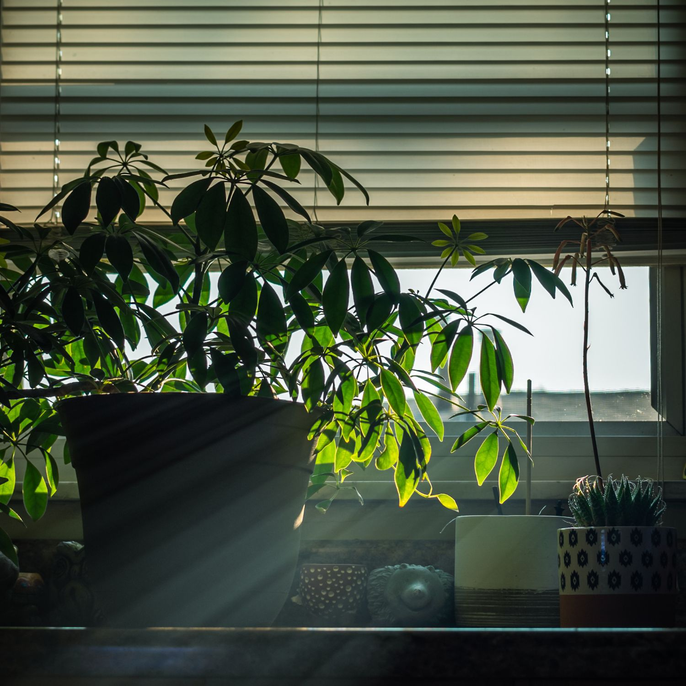
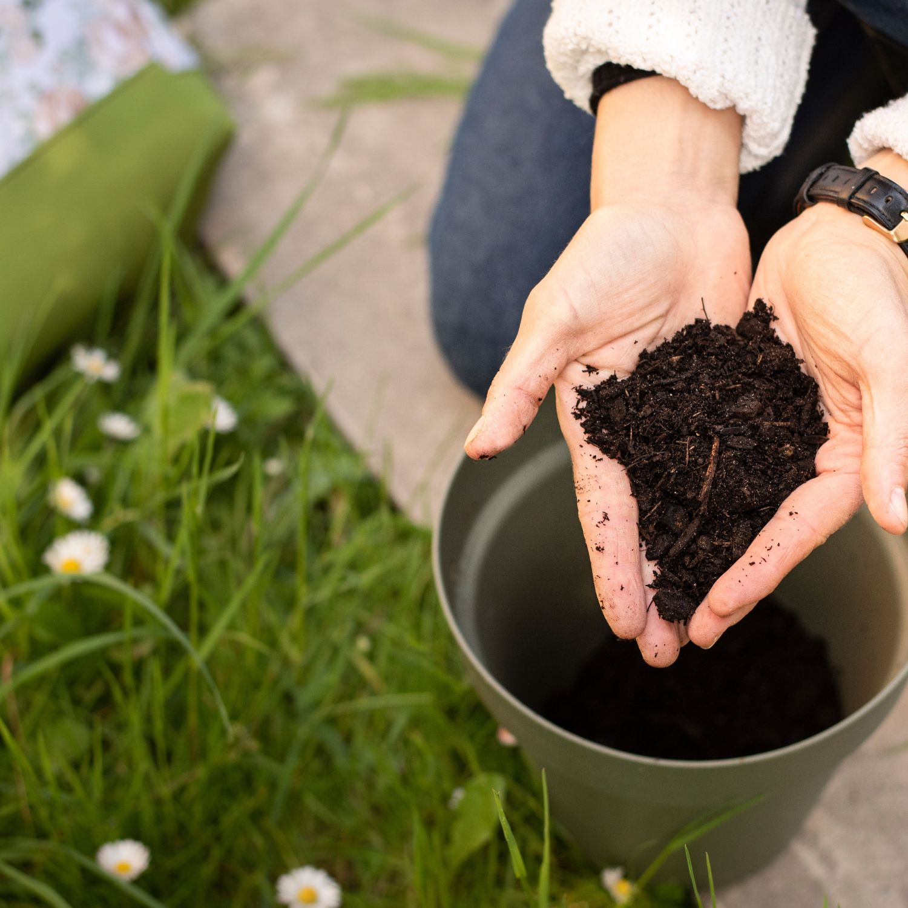
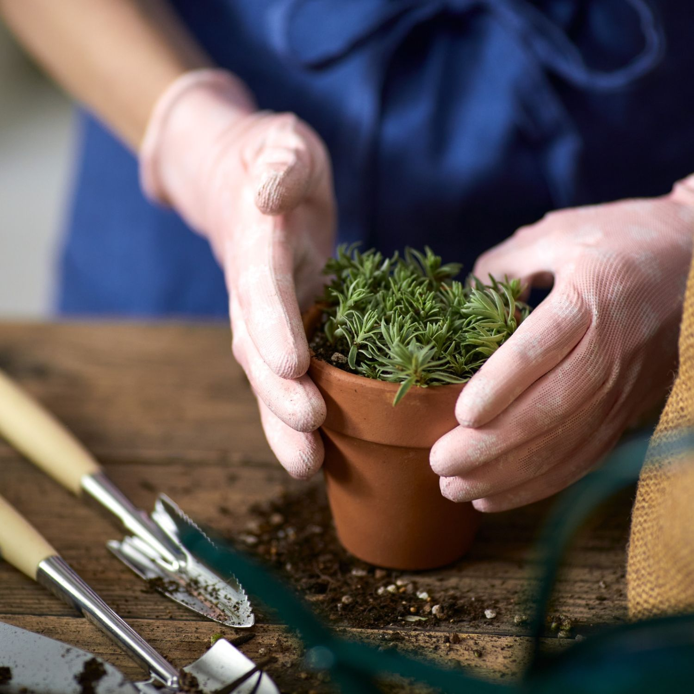
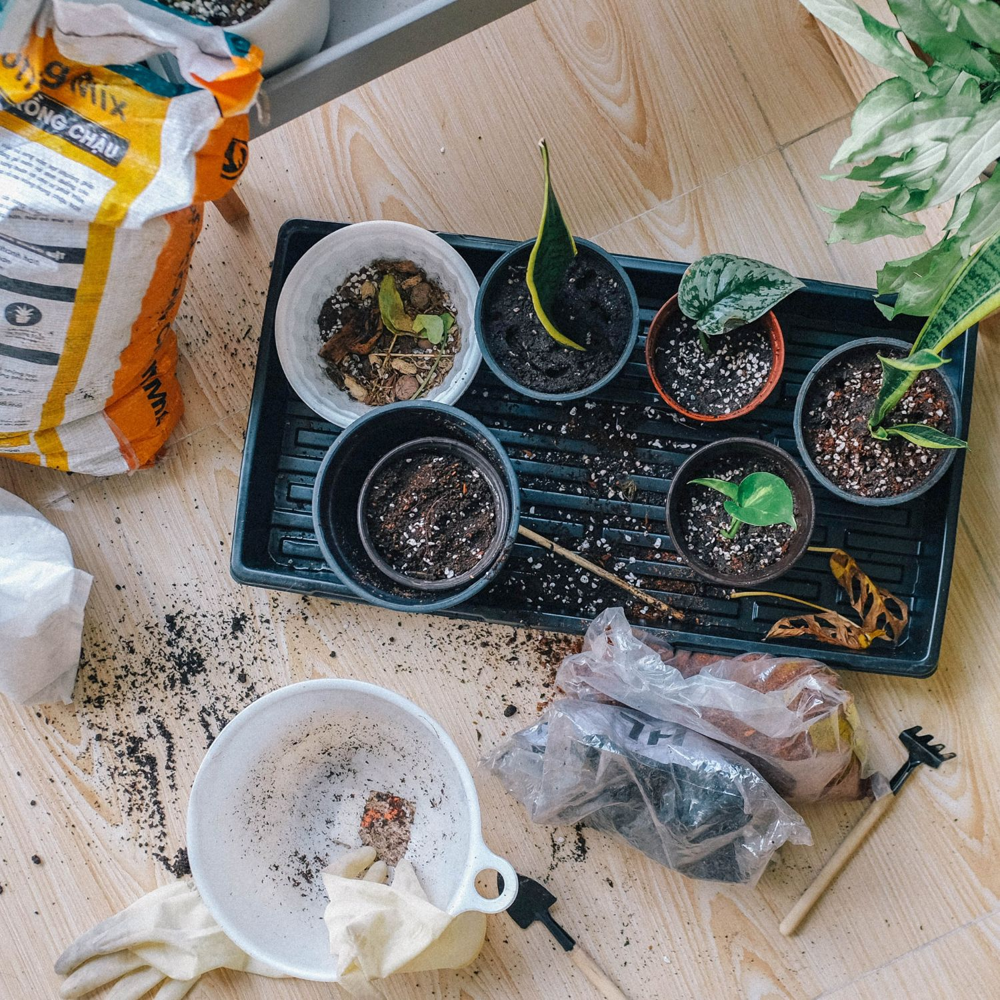

در این بخش میتوانید روشهای نگهداری، آبیاری، تغذیه و تکثیر گیاهان آپارتمانی را یاد بگیرید. کارتهای زیر شامل آموزشهای کوتاه و کاربردی هستند.

یاد بگیرید چگونه گیاهان خود را به موقع و درست آبیاری کنید تا همیشه شاداب بمانند.

بررسی نیازهای نوری گیاهان مختلف و نحوه قرار دادن آنها در محیط خانه.

راهنمای استفاده از کودهای طبیعی و شیمیایی برای رشد سالم گیاهان.

انتخاب گلدان مناسب و ترکیب خاک بهینه برای گیاهان آپارتمانی شما.

روشهای مختلف تکثیر گیاهان و ایجاد گیاهان جدید از گیاهان فعلی.
نکات خاص برای نگهداری گیاهان حساس و گیاهانی که به توجه بیشتری نیاز دارند.